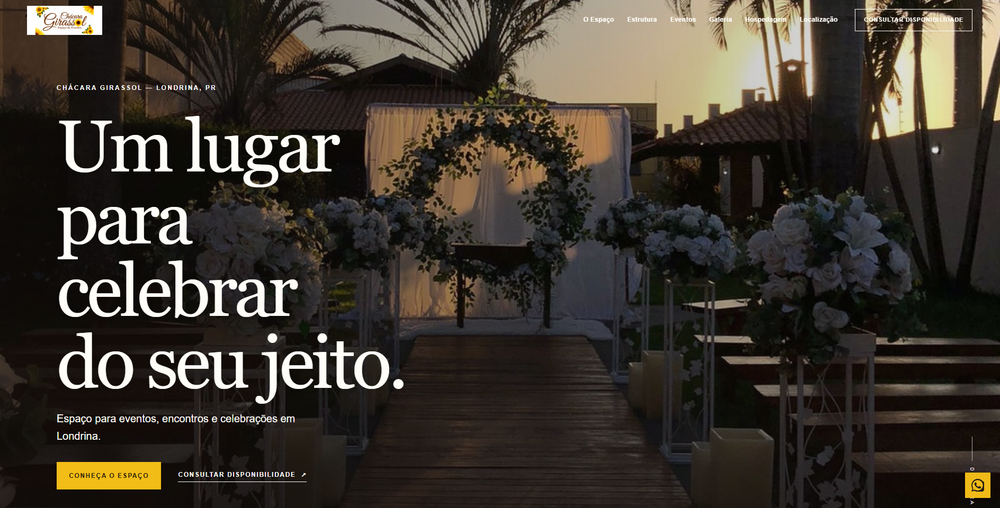

Abrir projeto ↗Gusto Lab / 2026Londrina / PR
Estúdio digital independente
Sites e soluções digitais para negócios que querem se destacar.
A Gusto Lab cria sites, landing pages, mini sites e criativos para marcas que querem uma presença digital mais profissional.
Web • Landing Pages • Mini Sites • CriativosRole para explorar ↓
01 / 06
01 — Projetos selecionados
Trabalhos que
falam por si.
Uma seleção de projetos feitos para negócios reais, com objetivos reais.
02 — O que fazemos
Digital com
boa direção.
O necessário para transformar uma ideia em uma presença online que funciona.
Sites para empresas
Presença profissional para apresentar serviços, estrutura, localização e contato.
Landing Pages
Páginas focadas em divulgar um serviço, produto, campanha ou negócio.
Mini Sites
Páginas compactas para bio, profissionais e pequenos negócios.
Criativos
Artes digitais para anúncios, redes sociais e divulgação.
Manutenção e suporte
Atualizações, alterações e suporte depois da publicação.
Domínio e hospedagem
Configuração da estrutura necessária para manter o projeto no ar.
03 — A primeira impressão
GL / 2026Seu negócio já causa uma primeira impressão.
A gente ajuda a fazer ela ser boa.
04 — Como funciona
Direto ao ponto.
Feito junto.
Um processo simples para o projeto avançar sem ruído.
01↗
Conversa
Entendemos o negócio e o objetivo do projeto.
02↗
Criação
Desenvolvemos uma proposta alinhada à identidade da marca.
03↗
Ajustes
Refinamos o projeto com base no feedback.
04↗
Publicação
Colocamos tudo no ar e deixamos funcionando.
Gusto Lab / Est. 2024
05 — Sobre a Gusto Lab
Pequeno estúdio.
Boa presença.
A Gusto Lab é um estúdio digital focado em criar soluções online simples, modernas e profissionais para empresas e profissionais.
Vamos conversar ↗06 — Contato
Disponível para novos projetos